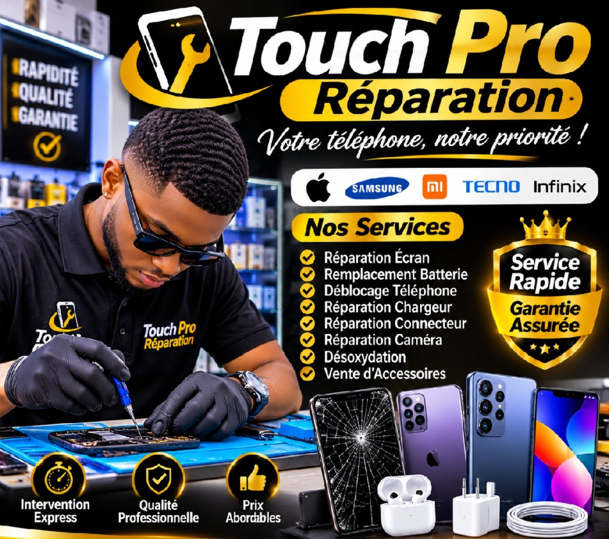

DÉPARTEMENT 02
Réparation de téléphones toutes marques : écrans, batteries, logiciel, matériel, diagnostic. Déposez votre appareil, suivez votre réparation.

Touchez une panne : elle est pré-remplie dans le formulaire de dépôt ci-dessous.